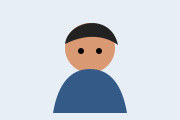

Thoughtful interfaces
Clear structure, accessible interactions, and visual details that help people get things done.
Computer science student · Builder · Learner
I enjoy turning curious ideas into useful, welcoming digital experiences. This site is a small home for my projects, notes, and next steps.

Currently learning by building.Clear structure, accessible interactions, and visual details that help people get things done.
I like exploring several approaches, testing them quickly, and keeping the useful parts.
Every project is an opportunity to document what worked and what I would try next.